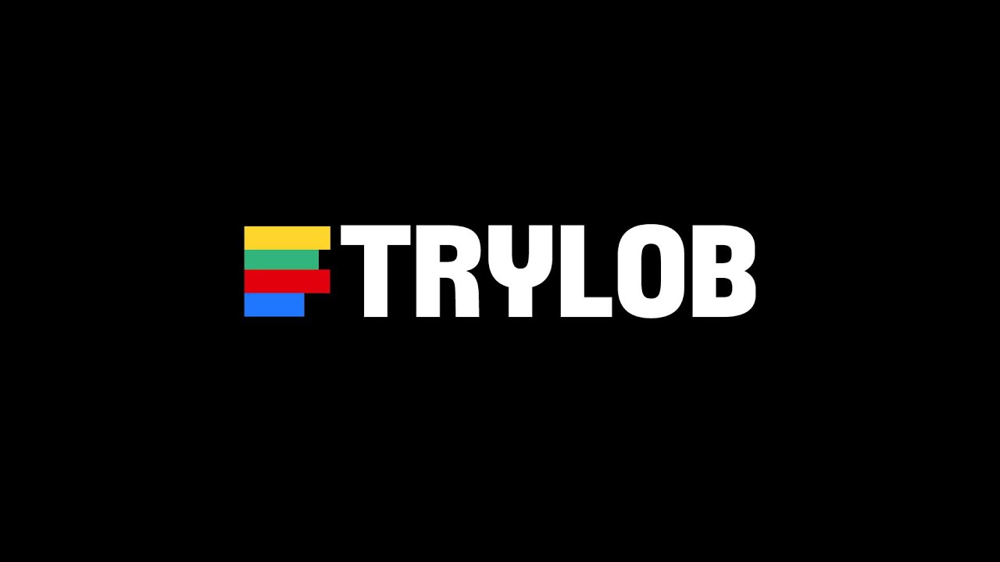

ÉLECTRO · BASS · DUB
MACHINES / SCRATCH / BATTERIE
CYBER
DUB.
Deux DJs. Un batteur.
Le live à haute tension.
01 / LE GROUPELA RENCONTRE DES FRÉQUENCES
Trois têtes.
Une seule
déflagration.
L'énergie de la batterie.
La liberté des machines.
Le relief du scratch.
Trylob réunit deux DJs et un batteur autour d'un terrain de jeu commun : la bass music. Un trio électro bass dub qui fait dialoguer pulsations électroniques et batterie live.
Sur scène, les textures se croisent, les basses prennent de l'ampleur et le rythme devient physique. Le groupe donne un nom à cette rencontre : le cyber dub.
02
DJsMachines & scratch
01
BatteurÉnergie organique
∞
FréquencesÀ vivre ensemble
02 / LE LIVELA CHAÎNE YOUTUBE
Ça se passe
sur scène.
Une immersion dans l'univers de Trylob.
Découvrez « Swimmin », enregistré à l’Atelier de Cluses.

TRYLOB / SWIMMINREGARDER SUR YOUTUBE03 / CONCERTSLA BASSE SE PARTAGE
Au plus près
des vibrations.
SUIVRE TRYLOBRetrouvez les annonces du groupe sur sa chaîne officielle.
QUELQUES SCÈNES PASSÉES
L'Établi
Ouverture de saison · Massongy
HL Fest
Habère-Lullin · Vallée Verte
04 / BOOKING & CONTACTFAISONS DU BRUIT.
Votre scène.
Notre énergie.
Un festival, une salle, une soirée ?
Parlons de votre prochaine date.